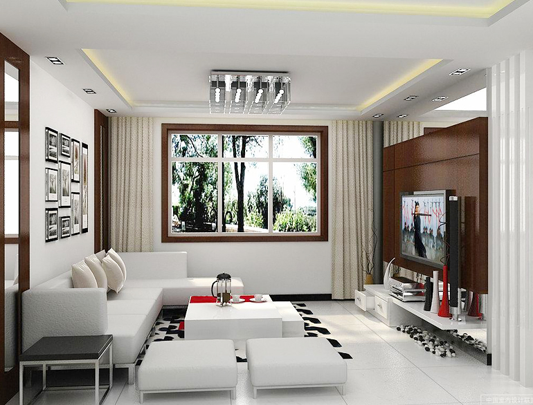

Moving into a new house or trying to refurbish the current one; whatever may be the reason, decorating the house is one thing that makes all of those once-in-a-while-we-know-all-of-it-ingenious-interior-decorators. (Am I right or am I right!!! ;)). And yes, home decoration is always a fun task that can greatly change the aura inside. Besides, when our mind oozes creativity, it’s hard to stop, isn’t it? Hunting down the best designers, choosing the patterns (rather arguing with your loved ones that my style is better than yours – that is what exactly happens :P), zeroing in on the style (vintage, modern, medieval, blah blah blah), all of this seems proper and yet so not productive at times. Agreed, the same old plain walls of your home might seem dull and oh-so-boring with time. To avoid any further confusion and to help you with the cause; The Royale lists 5 Cool Ways to Decorate A Single Wall for Your House. And if you are oh-i-should-rather-higher-an-interior-designer kind of a person; The Royale has already listed the things here. (that’ll simplify things for you ) So here are our ideas Feel free to try
Feel free to try different shades and hues
Painting is one of the most common and affordable ways to decorate the home walls. But if you don’t like the monotone, you can try using different shades and play around with different colours. Even different hues and shades of the same colour can create a striking look. You can even consider using a textured paint instead to the normal paint to add more pomp and elegance to the decor.
3
Use Wallpapers
Using wallpapers for home decoration is a great way to transform the atmosphere in your home and infuse freshness and add some sparkle to the environment. If you have a particular theme in mind for your home decor, make sure you choose a wallpaper to go the overall theme. Also, take into consideration the wall, which you want to decorate; if it is in living room you can choose a wallpaper with bold designs or mismatched patterns, whereas for bedroom choose something that gives out a soothing and cosy vibe.
Modular Shelves
Placing a few modular shelves on the wall is a unique yet superb way to add character to your living room. Apart from uplifting the beauty of the room, these shelves also provide you valuable space to keep decorative accessories like books, frames and many more.
Hang a wall clock
Wall Clock is a necessity for every home but it can also be used as art piece to decorate the home. Choose a big vintage time piece with a pendulum to add timeless elegance.
There are myriad of ways by which you can decorate your wall, unleash your creative senses and decorate your home to suit your personal taste. Also, make sure you share your ideas with us, as well.